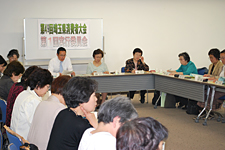

|
|
■議 題 1．事務局長から 「50回の記念の大会を控え、今回は1000人の参加を目指していきましょう。」との挨拶があり、運営体制の確認をしました。 (1) 運営体制 実行委員長（新日本婦人の会埼玉県本部会長） 副実行委員長（埼玉県地域婦人会連合会副会長） 事務局長（埼玉県消費者団体連絡会事務局長） 事務局（埼玉県消費者団体連絡会） (2) 第49回埼玉県消費者大会開催日程と会場 2013年10月10日（木）埼玉会館 大・小ホール・会議室 2．各団体参加者の自己紹介をしました。 3．第48回埼玉県消費者大会の県への要請書の回答･決算 が確認されました。 4．第49回埼玉県消費者大会分担金(案) を提案し、確認されました。 5．記念講演について これまでの講師要請の進捗を報告。他の候補について委員の希望の順に今後事務局が依頼をしていくことを確認しました。 6．プレ学習会について 第1回は5/23（木）、第2回は7/18（木）日程会場が確定。第1回は、「なぜTPP加盟か？加盟で暮らしはどうなるか？」と題し山家先生による学習をします。第2回は討議の結果、特に食の安全に焦点を当て、遺伝子組み換え食品、添加物などの表示が今後どう変わるか、消費者はどう選別すべきかを学習することにしました。ご意見をもとに事務局が講師について調整します。 7．分科会について キーワードを参考に昨今の情勢を話し合い、今大会で「平和」の分科会を取り入れ、以下「食・医療社会保障・子育て教育･消費者問題」など、次回には5つの分科会の区分けを決めていくことにしました。 8．大会に向けた検討スケジュール（案）・日程について 確認しました。 9．「市町村における消費生活関連事業調査」の実施について（15回目） 地域の消費者行政の実態を、消費者の側でも把握し、消費者行政充実につなげるために、今大会は各市町村の消費者団体がアンケート調査を行うことが提案され、意見交換をしました。行政との面談のきっかけと直接実態を知る良い機会として実施する方向で確認されました。次回詳細について事務局から説明します。 10．第2回実行委員会の出欠・プレ学習会の参加をFAXで返信頂くことを確認しました。 |